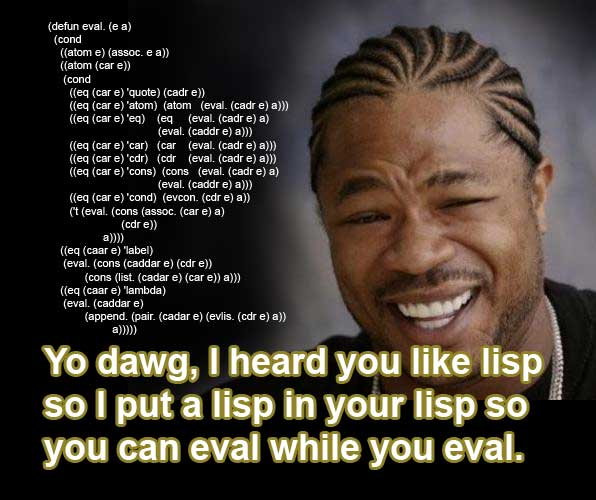

Para probar:
- Podés usar el verdadero lenguaje acá http://try-clojure.org/
- O bajar este intérprete. http://lfborjas.com/lisp.jar
(y correrlo con
java -jar lisp.jar)
¿Para qué?

Imaginemos que tenemos que simbolizar la computación
Expresiones
- Tenés símbolos
- Y listas (colecciones) de símbolos
zalgo ;es un símbolo (y esto, un comentario) () ; lista [] ; lista (a b c) [1 2 3] (a b (c d))
Toda cosa interesante pasa dentro de las listas
- El primer elemento se considera una operación
- Los demás, los operandos
- El valor de la expresión, si es una lista, es la operación aplicada a los operandos
user=> (+ 1 2 3 4) 10 user=> (+ (* 2 3) (/ 10 2)) 11
Siete operaciones básicas
1. quote: Devuelve su argumento
user=> (quote x) x user=> (quote (a b c)) (a b c) user=> '(a b c) (a b c)
2. coll? : si el argumento es una colección
user=> (coll? 1) false user=> (coll? '(1 2 3)) true user=> (coll? [1 2 3]) true
user=> (coll? (coll? 'x)) ??? user=> (coll? '(coll? 'x)) ???
user=> (coll? (coll? 'x)) false user=> (coll? '(coll? 'x)) true
3. = : si sus argumentos valen lo mismo
user=> (= 1 2) false user=> (= 'a 'a) true
4. first: primer elemento de la coll
user=> (first '(a b c)) a user=> (first '[c b a]) c
5. rest : la "cola" de la coll
user=> (rest '(a b c)) (b c) user=> (rest '[c b a]) (b a)
6. cons: crea una lista con cabeza y cola
user=> (cons 'a '(b c d)) (a b c d) user=> (cons 'a (cons 'b (cons 'c '()))) (a b c)
7. cond
- Recibe pares de expresiones, si la primera del par evalúa a verdadero devuelve la segunda del par; si no, pasa al siguiente par
user=> (cond (= 'a 'b) 'primero (coll? '(c d)) 'segundo) segundo user=> (cond false 'falso! (coll? 'x) '? true 'verdadero!) verdadero!
Funciones
- Podíamos aplicar una función
(cons 'a '(b c d))- ¿Cómo crearíamos las nuestras?
((fn [p1 p2 ...] exp) a1 a2 ...)
user=> ((fn [p1 p2 p3] 'exp) a1 a2 a3) user=> ((fn [x] (cons x '(b c))) 'a) (a b c) user=> ((fn [x y] (cons x y)) 'a '(b c)) (a b c) user=> ((fn [f] (f '(b c))) (fn [x] (cons 'a x))) (a b c)
(def nombre (fn [p1 p2] ('algo-con-nombre)))
- Con
defpodemos hacer que una función se pueda referir a sí misma
((def _last (fn [l] (cond (= (rest l) '()) (first l) true (_last (rest l))))) '(a b c)) ;devuelve c
;de atajo, digamos que (def f (fn [] exp)) ;sea: (defn f [] exp) ((defn _last [l] (cond (= (rest l) '()) (first l) true (_last (rest l)))) '(a b c)) ;devuelve c
Abreviaciones
;en vez de (first (first '(a b c))) ;digamos (ffirst '(a b c)) ;o (first (rest '(a b c))) ;mejor (frest '(a b c))
;en vez de (cons 'a (cons 'b (cons 'c '()))) ;digamos (list 'a 'b 'c)
Algunas funciones
(defn _and [a b] (cond a (cond b true true false) true false))
user=> (_and (= 'a 'a) (coll? '())) true (_and (= 'a b) (coll? '())) false
(defn _or [a b] (cond a true b true true false))
(defn _not [e] (cond e false true true))
(defn _empty? [l] (_or (= l []) (= l '())))
(defn append [x y] (cond (_empty? x) y true (cons (first x) (append (rest x) y))))
(defn pair-up [x y] (cond (_and (_empty? x) (_empty? y)) '() (_and (coll? x) (coll? y)) (cons (list (first x) (first y)) (pair-up (rest x) (rest y)))))
(defn lookup [sym env] (cond (empty? env) false (= (ffirst env) sym) (frfirst env) true (lookup sym (rest env))))
(defn _eval [exp env] (cond (_not (coll? exp)) (lookup exp env) (_not (coll? (first exp))) (cond (= (first exp) 'quote) (frest exp) (= (first exp) 'coll?) (coll? (_eval (frest exp) env)) (= (first exp) '=) (= (_eval (frest exp) env) (_eval (frrest exp) env)) (= (first exp) 'first) (first (_eval (frest exp) env)) (= (first exp) 'rest) (rest (_eval (frest exp) env)) (= (first exp) 'cons) (cons (_eval (frest exp) env) (_eval (frrest exp) env)) (= (first exp) 'cond) (evcond (rest exp) env) ;eval the body of the proc true (_eval (cons (lookup (first exp) env) (rest exp)) env)) (= (ffirst exp) 'def) (_eval (cons (frrfirst exp) (rest exp)) (cons (list (frfirst exp) (first exp)) env)) (= (ffirst exp) 'fn) (_eval (frrfirst exp) (append (pair-up (frfirst exp) (evlist (rest exp) env)) env))))
(defn evcond [clauses env] (cond (_eval (first clauses) env) (_eval (frest clauses) env) true (evcond (rrest clauses) env)))
(defn evlist [m env] (cond (_empty? m) '() true (cons (_eval (first m) env) (evlist (rest m) env))))
